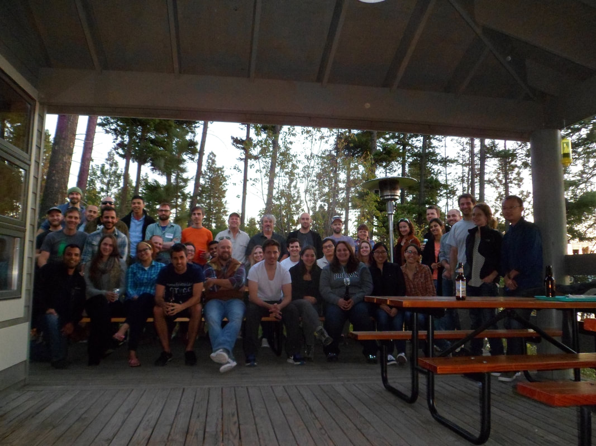

Dr. Sethuraman presents PPP v.1.0 at ConGen2017
9/30/2017
Sethuraman hosted two sessions on the use of model-based population genomics software/pipelines (PPP) at the Conservation Genomics 2017 Workshop, an annual workshop hosted by Brian Hand and Gordon Luikart and colleagues at the Flathead Lake Biological Station, University of Montana. Lots of anticipation for our first release!
Dr. Sethuraman, Dr. Hey and Dr. Webb organize NSF workshop on Genomics and Bioinformatics
7/2/2017
Sethuraman and Hey, in collaboration with TUTeach hosted a workshop on genomics and bioinformatics for high school teachers and teachers in training the week of June 26th - 30th, 2017. Teachers and trainees were paired up and introduced to the field of genomic sequence analyses and how they can incorporate bioinformatics (through introductory Python coding) in their classrooms. Click on the "Outreach" link for all the amazing lesson plans that were developed during this week-long sessions!
PPP's first poster, presented at CSUPERB, Santa Clara
1/3/2017
Our first poster on PPP was presented by undergraduate student, Shiori Takehara (California State University San Marcos) on building a Galaxy interface for PPP's modules for running STRUCTURE (Pritchard et al. 2000) at the CSU-wide annual biotechnology consortium, in Santa Clara, CA.